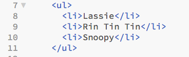

Dog tags: Pawing through the HTML5 elements
[Note: HTML elements can be structural or semantic. Structural (e.g. head and body) elements deal primarily with the logical format of the page and are meaningful for browsers and search engines. They also create a predictable format that makes code easy to outling and read. Today, Universal access to the web is enabled by tools such as screen readers. To be affective, theses tools require specific cues to signal semantic changes. For this important reason and others, HTML includes semantic elements (e.g. em, strong and blockquote) as well. Since Web accessibilty is of particular importance to me. In this Challenge and throughout my DBC tenure, I will place a particular emphasis on this area of the art of Web Design.]
Definitions:
- p
- Element is structural and represents a paragraph of text.
- Example:

- would render like this in a browser:
This is a paragraph
- strong
- Element is a semantic markup that signals a strong "importance", usually represented visually by bolded text.
- Example:

- would render like this in a browser:
HTML gives symantic meaning
- em
- Element is also a semantic markup and signals a stressed emphasis. The em
tag can be nested with each level of nesting indecating a greater degree of emphasis.
- Example:

- would render like this:
- The em tag indicates stress and is especially helpful to screen reader tools for conveying tone.
- ul and li
- These two elements combined represent an unordered list normally rendered as a bulleted list (similar to the format displayed on this page)
- Example:

- Lassie
- Rin Tin Tin
- Snoopy
">
- Would render like this:
-
- Lassie
- Rin Tin Tin
- Snoopy
- ol and li: These two elements combined represent an ordered list normally rendered as a numbered list (similar to the format displayed on this page)
- Example:
- Lassie
- Rin Tin Tin
- Snoopy
">
- Would render like this:
-
- Lassie
- Rin Tin Tin
- Snoopy
- a
- This element also know as anchor combines with the href attribute to create a hyperlink to other web pages, files, locations within the same page, email addresses, or a any other URL.
- Example:

- Would render like this in a browser:
- Keeping with the theme we present a couple DBC Dog Tags: Dog Tag (front) and Dog Tag (back)